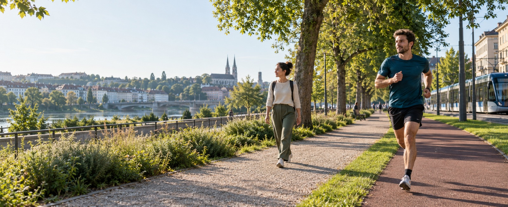
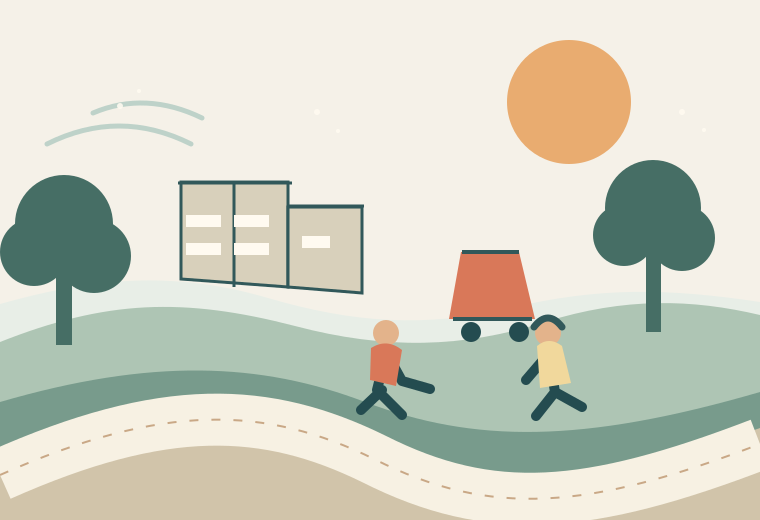

Environmental information for decisions outdoors
Heat and air pollution affect the plans we make outdoors.
At FerryWellCo, we bring heat and fine particle pollution (PM2.5) data into everyday planning. The location, time and activity matter as much as the forecast itself. We are developing GOTime for running, walking and outdoor sport, alongside separate applications for work sites and infrastructure.

Why context matters
A forecast is most useful when it answers a real planning question.
A heat or PM2.5 forecast tells us about the conditions outside. It does not tell a walker which route to take, a club when to meet or a ground team how to plan a shift. Those questions need information shaped around the activity.
When would a run, ride or group session fit the day’s conditions?
What conditions should a site lead consider before a demanding task begins?
How can useful environmental context appear where people already make plans?
Scientific foundation
Why we look at heat and PM2.5 together.
Fine particle pollution is associated with cardiovascular harm. Heat also strains the body, particularly during physical activity. People can encounter both on the same day. Research has established the effects of each exposure, while their combined effect in specific situations is still being studied. We use the available evidence to make both conditions easier to understand in context.
Read the scienceOur approach
From environmental data to a useful plan.
We work with estimates of current and future heat and PM2.5, then look at the place, timing and activity involved. The result is presented in a format that fits the decision: an activity comparison, an on-site brief or information inside an existing service.

Read the conditions
Use nowcasts (current estimates) and forecasts for heat and PM2.5 where the activity is planned.
Add the context
Consider the location, time, duration and demands of the planned activity.
Show useful options
Make the conditions and available choices visible through a comparison, prompt or brief.
Fit the setting
Shape the output for a runner, club, partner platform or site operations team.
This approach can use existing environmental data. It does not depend on FerryWellCo building a new hardware fleet.
GOTime
Planning a run, walk or group session.
GOTime is our product concept for outdoor movement. It puts heat and PM2.5 alongside a person’s planned activity, so they can compare times or places and see what is behind the information. Clubs can use the same view when organising a group session.
See how it worksChoose an activity and conditions to see the type of information we want to provide.
Applications
The same research has uses beyond sport.
GOTime serves walking and outdoor sport. For work sites, digital services, infrastructure and health organisations, we develop separate applications around the decisions those teams make.
Ground and site operations
Site-level analysis and a practical debrief for teams planning work outdoors, including airport ground handling, construction, logistics and agriculture.
Infrastructure and local environments
Local environmental profiles for data centres and industrial sites, using available data and site measurements where the question requires them.
Digital services
Heat and PM2.5 information integrated into wellness programmes, maps, wearables, weather products and safety services.
Health and portfolio planning
Exposure analysis for insurers, occupational-health teams and care organisations, developed around their planning and prevention questions.
Our team
Research and business development, together.
FerryWellCo connects environmental science with product and commercial work to bring the research into practical use.
Supported by DLAB Amsterdam Dive
Connect with us
Tell us about the decision you are working on.
We would like to hear from people planning outdoor activity, running ground operations, managing infrastructure or working with environmental-health data.
Email FerryWellCo